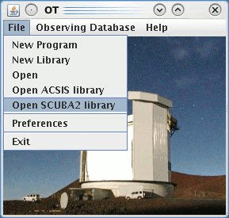
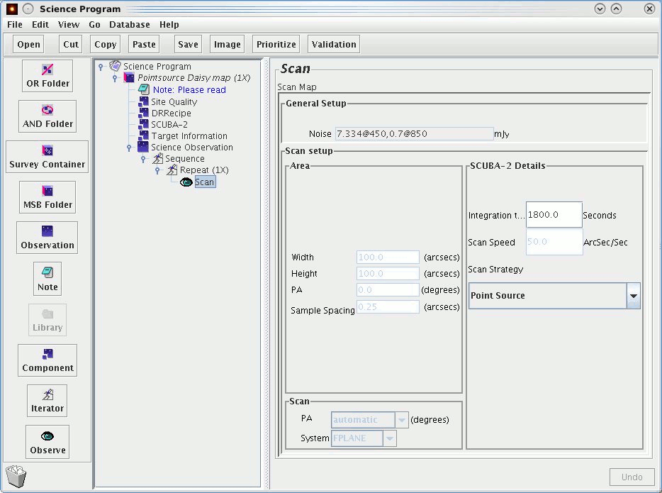
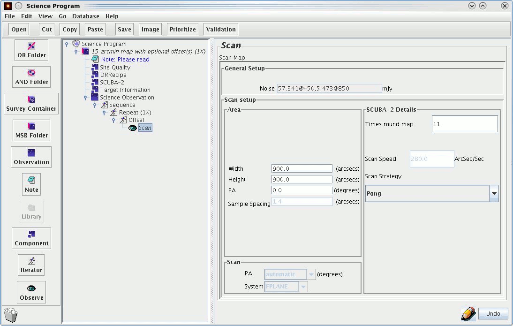
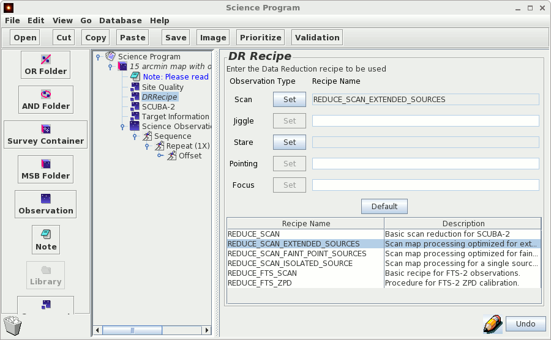

There are two observing modes available with SCUBA-2 — a daisy for point sources and a pong for larger scale mapping. Details on each can be at the following web page for SCUBA-2 observing modes.
We are currently recommending a time limit on individual observations of not more than 40 minutes in length. If you find your observations exceed this time we suggest you increase the number of repeats (this can be done by using the Observe counter in the MSB editor).
If after reading this guide you have any questions about preparing your observations, please consult with your "Friend of the Project", or email jcmtot@eaobservatory.org.
To open up the existing SCUBA-2 library go to the JCMT OT root window and click on “Open SCUBA-2 library”:

A window will pop up containing a list of folders. It is from this library that we can and copy over MSBs to be used in our program. For more information read The SCUBA-2 Library.
To access the template files go to “Open SCUBA-2 library” from the small OT window. For a template daisy MSB you will want to select, copy and paste the 'Pointsource Daisy map' folder.
Daisies are the simplest case and there are only 2 things you need to edit:
You will have calculated the latter when preparing your proposal using the time integration calculator. The minimum integration time for daisies is 15 seconds although the overhead for an observation this short will be quite high. The daisy pattern will keep running until the integration time expires and should not be interrupted before completion to gain the most even coverage. If you find the total time for your observation exceeds 40 minutes, reduce your integration time and increase the number of repeats.
The Scan Speed box is greyed out and cannot be edited. However the number in the box is a default and does not necessarily reflect the speed for your observation.
Below is an example of a 30 minute observation using the daisy mapping strategy:

To access the template files go to “Open SCUBA2 library” from the small OT window. You have a choice of three sizes of pongs:
Select the pong MSB you wish to use, copy and paste the (i.e. '15 arcmin map with optional offset(s)') folder. For pongs there are 2 thing you will need to edit:
We recommend that the number of times round the map be selected to fit the maximum number of rotations into the 40 minute time limit. This is the default number in the template MSBs. You may use a fewer number of times round the map but more rotations results in a flatter map we strongly advise you not to go below approximately 10 minutes i.e. 3 times for a 15 arcmin map and 2 times round the map for a 30 arcmin map and 1 degree map. From the map sizes specified the telescope translator will implement other observing parameters (scan spacing and scan velocity) to produce an optimum map.
Note: Pong map sizes other than the 3 standard ones can be specified, but in those cases the observation system will use best-guesses for the pong parameters and thus may not be optimum. Users use non-standard sizes at their own risk.
The numbers in the greyed out boxes for Scan Speed and Sample Spacing do not reflect the actual values used and may not be edited. The PA also becomes irrelevant as a rotating pong will result in a symmetrical map.
You are unlikely to want to make use of the offset iterator for SCUBA-2 but if you do guidelines can be found here.
Below is an example of a 900" pong. Note the height and width are adjusted to be 900" and the number of times around the map is set to 11.

When preparing your MSB's you can assign a data reduction recipe to your observations. The recipe you select will be applied when your data is processed for the JCMT Science Archive at CADC. There are currently 4 main options:
A basic general purpose recipe. If it is known in advance what type of source is being observed, then one of the more specific recipes below may be preferable. This recipe can be used for the SCUBA-2 standard calibrators as it will recognise them, select an appropriate configuration and derive a flux calibration factor.
Designed to maximise the recovery of extended structure. This uses the 'bright_extended' config file.
Designed to extract faint emission. This uses the 'blank_field' config file then applies a matched filter to your data.
Designed for observations of a single, bright isolated source. This uses the 'bright_compact' config file which assumes that there is no emission outside a 60" radius around the tracking position. It is not appropriate to use this recipe if there may be emission outside this region.
The list also contains two options which should only be used for FTS-2 observations:
To reduce observations of a source taken with FTS-2 scanning.
To reduce FTS-2 ZPD (zero path difference) calibrations.
To select the recipe you wish to use go to the DRRecipe component button and highlight the recipe you would like to add then click 'Set' next to the Scan button (for SCUBA-2).
For more information about the recipes, please see the SCUBA-2 Data Reduction Cookbook.

The time limit of 40 minutes was chosen as a reasonable compromise for an MSB between maximising the number of times around the map in an observation and the interval between necessary constraints such as pointing, focusing, array setups and scheduling. It is possible to take data for longer but instrument drifts during azimuth tracking can cause some bolometers to lose their calibration during very long observations.
Another important factor is the amount of data the is passed to the map-maker. We can sequence at about 45 minutes and any request for longer than this will be split into multiple chunks. The duration of a single chunk that can be processed by the map-maker is constrained by the total RAM available in the computer and 40 minutes reflects the chunk of data the map-maker can handle on a computer with a reasonable (e.g. 60GB) amount of memory.
40 minutes is therefore a recommendation rather than a strict rule and if your MSB exceeds that length by a few minutes you need not break it up.
It is recommend that observations are taken below an elevation of 75 degrees for both daisy and pong maps. The precise pattern traced by the telescope for both of these patterns cannot be sustained at high elevations.
Calibration observations will be taken by the TSS every 2–3 hours. As usual a pointing is typical done every hour or after any large slew.
You are looking at an older version of JCMT OT. In this case you will have to insert the map sizes manually for pongs. You will also have to manually insert the DRRecipe component (this can be found under the 'component' button along the left hand side of the window).
This is due to the dark and flat-field scans which come at the beginning and end of every observation. These are used by to calibrate the bolometers and will add approximately a minute to the length of your MSB.
You can build up a large area by tiling the pong maps. The legacy surveys have determined that the most effective way to tile pongs is in a hexagonal pattern. It is also possible to specify pong map sizes other than the 3 standard, but in those cases the observation system will use best-guesses for the pong parameters and thus may not be optimum. Users use non-standard sizes at their own risk. We recommend you don't exceed 7200'' x 7200'' for pong maps and be aware that the integration time does drop off considerably.
If you have a very strong source and are unconcerned about the background you can go only once around the pong. You can expect the background to be extremely variable however. We would recommend at least twice round and ideally not fewer than three times round.